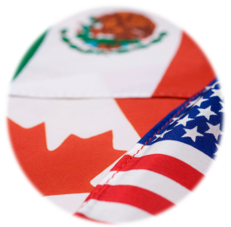

American Free Trade Agreement (NAFTA)
- Fast Facts
History
-
The North American Free Trade Agreement (NAFTA), signed by Prime
Minister Brian Mulroney, Mexican President Carlos Salinas, and U.S.
President George H.W. Bush, came into effect on January 1, 1994.
-
The NAFTA was built on the success of the Canada-U.S. Free Trade
Agreement and provided a complement to Canada's efforts through the
WTO agreements by making deeper commitments in some key areas.
-
With the coming into force of the NAFTA, the world's largest free
trade area was formed. The Agreement has brought economic growth and
rising standards of living for people in all three countries.
-
The NAFTA, being the first comprehensive trade agreement of its
type, has set a valuable example of the benefits of trade
liberalization for the rest of the world.
-
In the event of a dispute, the NAFTA directs the governments
concerned to seek to resolve their differences amicably through the
NAFTA's Committees and Working Groups or other consultations. If no
mutually acceptable solution is found, the NAFTA provides for
dispute settlement procedures. One of the principle elements of the
NAFTA is the establishment of a clear set of rules for dealing with
the settlement of disputes. The NAFTA was the first agreement to
afford cross-border investors an impartial legal tribunal to address
differences.
-
Under the NAFTA, tariffs on all covered goods traded between Canada
and Mexico were eliminated in 2008. Tariffs on covered goods traded
between Canada and the United States became duty free on January 1,
1989, in accordance with the CUSFTA which was carried forward under
NAFTA.
Prosperity
-
Since 1994, NAFTA has generated economic growth and rising standards
of living for the people of all three member countries. By
strengthening the rules and procedures governing trade and
investment throughout the continent, NAFTA has proven to be a solid
foundation for building Canada's future prosperity.
-
NAFTA has had an overwhelmingly positive effect on the Canadian
economy. It has opened up new export opportunities, acted as a
stimulus to build internationally competitive businesses, and helped
attract significant foreign investment.
-
By any measure the NAFTA has been a success by serving as a basis to
grow both trilateral and bilateral North American relationships and
the results speak for themselves. This integration helps maximize
our capabilities and make our economies more innovative and
competitive.
-
In 2016, total trilateral merchandise trade, as measured by the
total of each country's imports from its other two NAFTA partners,
amounted to nearly USD $1.0 trillion - more than a threefold
increase since 1993. In 2016, NAFTA partners represented 28% of the
world's gross domestic product (GDP) with just less than 7% of the
world's population. Since the implementation of NAFTA, the North
American economy has expanded, with the combined GDP for Canada, the
U.S. and Mexico reaching USD $21.1 trillion in 2016.
-
Cooperation through the NAFTA has created a North America where
Canadian, American and Mexican companies do more than make and sell
things to each other, now, our companies increasingly make things
together.
Want to lean more about NAFTA? Please click
here
for more resources.